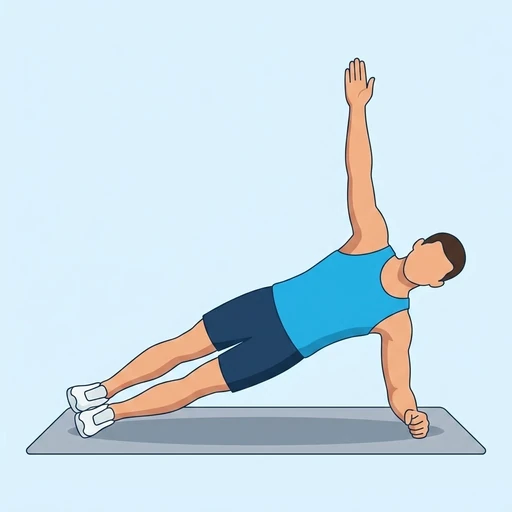

Side Plank
A lateral plank variation targeting the obliques and lateral core.
Core · Bodyweight · Beginner

Muscles worked by the Side Plank
Primary
Secondary
Also called: oblique, obliques, side abs, external oblique, internal oblique, transverse abdominis.
Equipment
No equipment — this is a bodyweight exercise.
How to do the Side Plank
- Lie on your side with your forearm on the floor, elbow under your shoulder.
- Lift your hips off the floor, forming a straight line from head to feet.
- Hold the position, keeping your core tight.
- Breathe steadily.
- Repeat on both sides.
Form tips
- Don't let your top shoulder roll forward during the hold.
- Push the floor away through the forearm rather than sinking into the shoulder.
- Keep your head in line with your spine.
At a glance
| Body part | Core |
|---|---|
| Category | Strength |
| Force type | Static |
| Mechanic | Compound |
| Difficulty | Beginner |
| Equipment | Bodyweight |
| Goals | Endurance, Strength |
| Tags | Core, Calisthenics, Lower back safe, Knee safe, No axial load, Shoulder safe |
| MET | 3.5 (metabolic equivalent, for calorie estimates) |
| Unilateral | No |
| Bodyweight | Yes |
| Dataset id | side-plank |
Side Plank in German & Spanish
| German | Side Plank |
|---|---|
| Spanish | Plancha Lateral |
Descriptions, instructions and tips ship in all three languages in the JSON.
Related exercises
Exercise data (JSON)
The record below is exactly what exercises.json ships for this exercise — names, descriptions, instructions and tips in English, German and Spanish.
{
"id": "side-plank",
"name_en": "Side Plank",
"name_de": "Side Plank",
"name_es": "Plancha Lateral",
"description_en": "A lateral plank variation targeting the obliques and lateral core.",
"description_de": "Eine seitliche Plank-Variation, die die schrägen Bauchmuskeln und die seitliche Körpermitte beansprucht.",
"description_es": "Una variación de plancha lateral que trabaja los oblicuos y el core lateral.",
"category": "strength",
"force_type": "static",
"mechanic": "compound",
"difficulty": "beginner",
"body_part": "core",
"primary_muscles": [
"obliques",
"transverse_abdominis"
],
"secondary_muscles": [
"gluteus_medius",
"rectus_abdominis"
],
"goals": [
"endurance",
"strength"
],
"tags": [
"core",
"calisthenics",
"lower_back_safe",
"knee_safe",
"no_axial_load",
"shoulder_safe"
],
"variation_group": "plank",
"is_unilateral": false,
"is_bodyweight": true,
"instructions_en": [
"Lie on your side with your forearm on the floor, elbow under your shoulder.",
"Lift your hips off the floor, forming a straight line from head to feet.",
"Hold the position, keeping your core tight.",
"Breathe steadily.",
"Repeat on both sides."
],
"instructions_de": [
"Lege dich seitlich hin, Unterarm auf dem Boden, Ellbogen unter der Schulter.",
"Hebe die Hüften vom Boden, sodass eine gerade Linie von Kopf bis Fuß entsteht.",
"Halte die Position mit angespannter Körpermitte.",
"Atme gleichmäßig.",
"Wiederhole auf beiden Seiten."
],
"instructions_es": [
"Acuéstate de lado con el antebrazo en el suelo y el codo bajo el hombro.",
"Levanta las caderas del suelo formando una línea recta de la cabeza a los pies.",
"Mantén la posición con el core apretado.",
"Respira con regularidad.",
"Repite de ambos lados."
],
"tips_en": [
"Don't let your top shoulder roll forward during the hold.",
"Push the floor away through the forearm rather than sinking into the shoulder.",
"Keep your head in line with your spine."
],
"tips_de": [
"Lass die Hüfte während der Haltezeit nicht absinken.",
"Drücke den Unterarm aktiv in den Boden, um die Schulter zu stabilisieren.",
"Vermeide, mit der Hüfte nach vorn oder hinten zu kippen."
],
"tips_es": [
"No dejes que la cadera se hunda hacia el suelo.",
"Alinea hombros y cadera en un mismo plano, sin rotar el torso.",
"Empuja el suelo con el antebrazo para no colgarte del hombro."
],
"met": 3.5,
"images": {
"flat": {
"main": "images/flat/side-plank-main.webp"
}
}
}Fetch just this exercise
const { exercises } = await fetch(
"https://exercise-dataset.com/exercises.json"
).then(r => r.json());
const ex = exercises.find(e => e.id === "side-plank");Free for personal and commercial in-app use with attribution (“Exercise data by RepDB”) — see the license and ready-made attribution snippets. Redistributing the data as a dataset or API is not permitted.